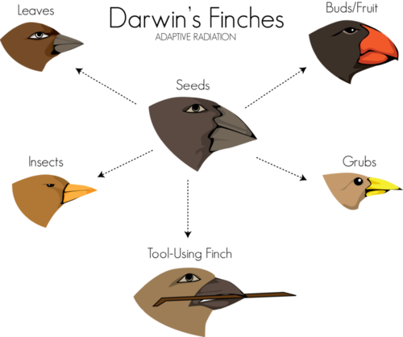

The Theory of Evolution
The Grand Canyon, shown here, is an American icon and one of the wonders of the natural world. It’s also a record of the past. Look at the rock layers in the picture. If you were to walk down a trail to the bottom of the canyon, with each step down you would be taking a step back in time. That’s because lower layers of rock represent the more distant past. The rock layers and the fossils they contain show the history of Earth and its organisms over a 2-billion-year time span. Although Charles Darwin never visited the Grand Canyon, he saw rock layers and fossils in other parts of the world. They were one inspiration for his theory of evolution. Darwin’s theory rocked the scientific world. In this chapter, you will read why.
Darwin and the Theory of Evolution
Lesson Objectives
-
State Darwin’s theory of evolution by natural selection.
-
Describe observations Darwin made on the voyage of the
Beagle.
-
Identify influences on Darwin’s development of evolutionary theory.
-
Explain how a species can evolve through natural selection.
Vocabulary
-
artificial selection
-
fitness
-
Galápagos Islands
-
inheritance of acquired characteristics
Introduction
The Englishman Charles Darwin is one of the most famous scientists who ever lived. His place in the history of science is well deserved. Darwin’s theory of evolution represents a giant leap in human understanding. It explains and unifies all of biology.
An overview of evolution can be seen at
http://www.youtube.com/user/khanacademy#p/c/7A9646BC5110CF64/0/GcjgWov7mTM
(17:39).
Click on the image above for more content
Darwin’s Theory at a Glance
Darwin’s theory of evolution actually contains two major ideas:
-
One idea is that evolution occurs. In other words, organisms change over time. Life on Earth has changed as descendants diverged from common ancestors in the past.
-
The other idea is that evolution occurs by natural selection. Natural selection is the process in which living things with beneficial traits produce more offspring than others do. This results in changes in the traits of living things over time.
In Darwin’s day, most people believed that all species were created at the same time and remained unchanged thereafter. They also believed that Earth was only 6,000 years old. Therefore, Darwin’s ideas revolutionized biology. How did Darwin come up with these important ideas? It all started when he went on a voyage.
The Voyage of the
Beagle
In 1831, when Darwin was just 22 years old, he set sail on a scientific expedition on a ship called the
HMS Beagle
. He was the naturalist on the voyage. As a naturalist, it was his job to observe and collect specimens of plants, animals, rocks, and fossils wherever the expedition went ashore. The route the ship took and the stops they made are shown in
Figure
below
. You can learn more about Darwin’s voyage at this link:
http://www.aboutdarwin.com/voyage/voyage03.html
.
Voyage of the Beagle. This map shows the route of Darwin’s 5-year voyage on the HMS Beagle. Each stop along the way is labeled. Darwin and the others on board eventually circled the globe.
Darwin was fascinated by nature, so he loved his job on the
Beagle.
He spent more than 3 years of the 5-year trip exploring nature on distant continents and islands. While he was away, a former teacher published Darwin’s accounts of his observations. By the time Darwin finally returned to England, he had become famous as a naturalist.
Darwin’s Observations
During the long voyage, Darwin made many observations that helped him form his theory of evolution. For example:
-
He visited tropical rainforests and other new habitats where he saw many plants and animals he had never seen before (see
Figure
below
). This impressed him with the great diversity of life.
-
He experienced an earthquake that lifted the ocean floor 2.7 meters (9 feet) above sea level. He also found rocks containing fossil sea shells in mountains high above sea level. These observations suggested that continents and oceans had changed dramatically over time and continue to change in dramatic ways.
-
He visited rock ledges that had clearly once been beaches that had gradually built up over time. This suggested that slow, steady processes also change Earth’s surface.
-
He dug up fossils of gigantic extinct mammals, such as the ground sloth (see
Figure
below
). This was hard evidence that organisms looked very different in the past. It suggested that living things—like Earth’s surface—change over time.
On his voyage, Darwin saw giant marine iguanas and blue-footed boobies. He also dug up the fossil skeleton of a giant ground sloth like the one shown here. From left: Giant Marine Iguana, Blue-Footed Boobies, and Fossil Skeleton of a Giant Ground Sloth
The Galápagos Islands
Darwin’s most important observations were made on the
Galápagos Islands
(see map in
Figure
below
). This is a group of 16 small volcanic islands 966 kilometers (600 miles) off the west coast of South America.
Galápagos Islands. This map shows the location of the Galápagos Islands that Darwin visited on his voyage.
Individual Galápagos islands differ from one another in important ways. Some are rocky and dry. Others have better soil and more rainfall. Darwin noticed that the plants and animals on the different islands also differed. For example, the giant tortoises on one island had saddle-shaped shells, while those on another island had dome-shaped shells (see
Figure
below
). People who lived on the islands could even tell the island a turtle came from by its shell. This started Darwin thinking about the origin of species. He wondered how each island came to have its own type of tortoise.

Galápagos Tortoises. Galápagos tortoises have differently shaped shells depending on which island they inhabit. Tortoises with saddle-shaped shells can reach up to eat plant leaves above their head. Tortoises with dome-shaped shells cannot reach up in this way. These two types of tortoises live on islands with different environments and food sources. How might this explain the differences in their shells?
Influences on Darwin
Science, like evolution, always builds on the past. Darwin didn’t develop his theory completely on his own. He was influenced by the ideas of earlier thinkers.
Earlier Thinkers Who Influenced Darwin
-
Jean Baptiste Lamarck (1744–1829) was an important French naturalist. He was one of the first scientists to propose that species change over time. However, Lamarck was wrong about how species change. His idea of the
inheritance of acquired characteristics
is incorrect. Traits an organism develops during its own life time cannot be passed on to offspring, as Lamarck believed.
-
Charles Lyell (1797–1875) was a well-known English geologist. Darwin took his book,
Principles of Geology,
with him on the
Beagle
. In the book, Lyell argued that gradual geological processes have gradually shaped Earth’s surface. From this, Lyell inferred that Earth must be far older than most people believed.
-
Thomas Malthus (1766–1834) was an English economist. He wrote an essay titled
On Population
. In the essay, Malthus argued that human populations grow faster than the resources they depend on. When populations become too large, famine and disease break out. In the end, this keeps populations in check by killing off the weakest members.
Artificial Selection
These weren’t the only influences on Darwin. He was also aware that humans could breed plants and animals to have useful traits. By selecting which animals were allowed to reproduce, they could change an organism’s traits. The pigeons in
Figure
below
are good examples. Darwin called this type of change in organisms
artificial selection
. He used the word
artificial
to distinguish it from natural selection.
Artificial Selection in Pigeons. Pigeon hobbyists breed pigeons to have certain characteristics. Both of the pigeons in the bottom row were bred from the common rock pigeon.
Wallace’s Theory
Did you ever hear the saying that “great minds think alike?” It certainly applies to Charles Darwin and another English naturalist named Alfred Russel Wallace. Wallace lived at about the same time as Darwin. He also traveled to distant places to study nature. Wallace wasn’t as famous as Darwin. However, he developed basically the same theory of evolution. While working in distant lands, Wallace sent Darwin a paper he had written. In the paper, Wallace explained his evolutionary theory. This served to confirm what Darwin already thought.
Darwin’s Theory of Evolution by Natural Selection
Darwin spent many years thinking about the work of Lamarck, Lyell, and Malthus, what he had seen on his voyage, and artificial selection. What did all this mean? How did it all fit together? It fits together in Darwin’s theory of evolution by natural selection. It’s easy to see how all of these influences helped shape Darwin’s ideas.
For a discussion of the underlying causes of natural selection and evolution see
http://www.youtube.com/user/khanacademy#p/c/7A9646BC5110CF64/5/DuArVnT1i-E
(19:51).
Click on the image above for more content
Evolution of Darwin’s Theory
It took Darwin years to form his theory of evolution by natural selection. His reasoning went like this:
-
Like Lamarck, Darwin assumed that species can change over time. The fossils he found helped convince him of that.
-
From Lyell, Darwin saw that Earth and its life were very old. Thus, there had been enough time for evolution to produce the great diversity of life Darwin had observed.
-
From Malthus, Darwin knew that populations could grow faster than their resources. This “overproduction of offspring” led to a “struggle for existence,” in Darwin’s words.
-
From artificial selection, Darwin knew that some offspring have chance variations that can be inherited. In nature, offspring with certain variations might be more likely to survive the “struggle for existence” and reproduce. If so, they would pass their favorable variations to their offspring.
-
Darwin coined the term
fitness
to refer to an organism’s relative ability to survive and produce fertile offspring. Nature selects the variations that are most useful. Therefore, he called this type of selection natural selection.
-
Darwin knew artificial selection could change domestic species over time. He inferred that natural selection could also change species over time. In fact, he thought that if a species changed enough, it might evolve into a new species.
Wallace’s paper not only confirmed Darwin’s ideas. They pushed him to finish his book,
On the Origin of Species.
Published in 1859, this book changed science forever. It clearly spelled out Darwin’s theory of evolution by natural selection and provided convincing arguments and evidence to support it.
Applying Darwin’s Theory
The following example applies Darwin’s theory. It explains how giraffes came to have such long necks (see
Figure
below
).
-
In the past, giraffes had short necks. But there was chance variation in neck length. Some giraffes had necks a little longer than the average.
-
Then, as now, giraffes fed on tree leaves. Perhaps the environment changed, and leaves became scarcer. There would be more giraffes than the trees could support. Thus, there would be a “struggle for existence.”
-
Giraffes with longer necks had an advantage. They could reach leaves other giraffes could not. Therefore, the long-necked giraffes were more likely to survive and reproduce. They had greater fitness.
-
These giraffes passed the long-neck trait to their offspring. Each generation, the population contained more long-necked giraffes. Eventually, all giraffes had long necks.
African Giraffes. Giraffes feed on leaves high in trees. Their long necks allow them to reach leaves that other ground animals cannot.
As this example shows, chance variations may help a species survive if the environment changes. Variation among species helps ensure that at least one will be able to survive environmental change.
A summary of Darwin's ideas are presented in the
Natural Selection and the Owl Butterfly
video:
http://www.youtube.com/user/khanacademy#p/c/7A9646BC5110CF64/3/dR_BFmDMRaI
(13:29).
Click on the image above for more content
KQED: Chasing Beetles, Finding Darwin
It's been over 150 years since Charles Darwin published
On the Origin of Species
. Yet his ideas remain as central to scientific exploration as ever, and has been called the
unifying
concept of all biology. Is evolution continuing today? Of course it is.
QUEST follows researchers who are still unlocking the mysteries of evolution, including entomologist David Kavanaugh of the California Academy of Sciences, who predicted that a new beetle species would be found on the Trinity Alps of Northern California. See
http://www.kqed.org/quest/television/chasing-beetles-finding-darwin2
for more information.
It's rare for a biologist to predict the discovery of a new species – even for someone like Kavanaugh, who has discovered many new species. For his prediction, Kavanaugh drew inspiration from Darwin's own 1862 prediction. When Darwin observed an orchid from Madagascar with a foot-long nectare, he predicted that a pollinator would be found with a tongue long enough to reach the nectar inside the orchid's very thin, elongated nectar "pouch," though he had never seen such a bird or insect. Darwin's prediction was based on his finding that all species are related to each other and that some of them evolve together, developing similar adaptations. His prediction came true in 1903, when a moth was discovered in Madagascar with a long, thin proboscis, which it uncurls to reach the nectar in the orchid's nectare. In the process of feeding from the orchid, the moth serves as its pollinator. The moth was given the scientific name
Xanthopan morganii praedicta
, in honor of Darwin’s prediction.

Click on the image above for more content
KQED: The California Academy of Sciences
Founded in 1853 as the first scientific institution in the western United States, the California Academy of Sciences' mission is to explore, explain, and protect the natural world. The California Academy of Sciences has the largest collection of biological reference materials west of the Mississippi River. Dating back over 100 years, the collection provides a treasure trove of biological information for scientists and researchers studying the natural world
http://www.calacademy.org/
.
Click on the image above for more content
Norman Penny, collections manager of the entomology department of the California Academy of Sciences, gives QUEST viewers a peek at the California Academy of Sciences vast butterfly collection, and discusses the evolutionary importance of butterflies. See
http://science.kqed.org/quest/video/science-on-the-spot-cal-academy-butterfly-collection/
for additional information.
Click on the image above for more content
KQED: The Farallon Islands: California's Galapagos
As one of 552 designated National Wildlife Refuges, the Farallon Islands are virtually uninhabited by humans. These islands are home to the largest seabird breeding colony in the contiguous United States. The Farallon Islands also have a rich diversity of marine life. They are the spawning grounds for numerous fish and invertebrate species, and at least 36 species of marine mammals have been observed in surrounding waters. This unique and fragile ecosystem has informally earned these islands the name
the Galapagos of California.
Lying just 28 miles off the coast of California, the Farallon Islands sits amid one of the most productive marine food webs on the planet. Ventures out for a visit to learn what life is like on the islands and meet the scientists who call this incredibly wild place home at
http://www.kqed.org/quest/television/the-farallon-islands--californias-galapagos
.
Click on the image above for more content
Lesson Summary
-
Darwin’s theory of evolution by natural selection states that living things with beneficial traits produce more offspring than others do. This produces changes in the traits of living things over time.
-
During his voyage on the
Beagle
, Darwin made many observations that helped him develop his theory of evolution. His most important observations were made on the Galápagos Islands.
-
Darwin was influenced by other early thinkers, including Lamarck, Lyell, and Malthus. He was also influenced by his knowledge of artificial selection.
-
Wallace’s paper on evolution confirmed Darwin’s ideas. It also pushed him to publish his book,
On the Origin of Species.
The book clearly spells out his theory. It also provides evidence and logic to support it.
Lesson Review Questions
Recall
1. State Darwin’s theory of evolution by natural selection.
2. Describe two observations Darwin made on his voyage on the
Beagle
that helped him develop his theory of evolution.
3. What is the inheritance of acquired characteristics? What scientist developed this mistaken idea?
4. What is artificial selection? How does it work?
5. How did Alfred Russel Wallace influence Darwin?
Apply Concepts
6. Apply Darwin’s theory of evolution by natural selection to a specific case. For example, explain how Galápagos tortoises could have evolved saddle-shaped shells.
Think Critically
7. Why did Darwin’s observations of Galápagos tortoises cause him to wonder how species originate?
8. Explain how the writings of Charles Lyell and Thomas Malthus helped Darwin develop his theory of evolution by natural selection.
Points to Consider
Darwin’s book
On the Origin of Species
is a major milestone in science. It introduced biology’s most important theory. It also provided an excellent example of how to think like a scientist. A scientist uses evidence and logic to understand the natural world. In this lesson, you read about some of the evidence Darwin used. This evidence included fossils and artificial selection.
-
What other evidence might be used to show that evolution occurs? What about evidence based on molecules?
-
Do you think it’s possible to see evolution occurring? How might that happen?
Evidence for Evolution
Lesson Objectives
-
Describe how fossils help us understand the past.
-
Explain how evidence from living species gives clues about evolution.
-
State how biogeography relates to evolutionary change.
Vocabulary
-
adaptive radiation
-
analogous structure
-
biogeography
-
comparative anatomy
-
comparative embryology
-
homologous structure
-
paleontologist
-
vestigial structure
Introduction
In his book
On the Origin of Species,
Darwin included a lot of evidence to show that evolution had taken place. He also made logical arguments to support his theory that evolution occurs by natural selection. Since Darwin’s time, much more evidence has been gathered. The evidence includes a huge number of fossils. It also includes more detailed knowledge of living things, right down to their DNA.
Fossil Evidence
Fossils are a window into the past. They provide clear evidence that evolution has occurred. Scientists who find and study fossils are called
paleontologists
. How do they use fossils to understand the past? Consider the example of the horse, shown in
Figure
below
. The fossil record shows how the horse evolved.
Evolution of the Horse. The fossil record reveals how horses evolved.
The oldest horse fossils show what the earliest horses were like. They were about the size of a fox, and they had four long toes. Other evidence shows they lived in wooded marshlands, where they probably ate soft leaves. Through time, the climate became drier, and grasslands slowly replaced the marshes. Later fossils show that horses changed as well.
-
They became taller, which would help them see predators while they fed in tall grasses.
-
They evolved a single large toe that eventually became a hoof. This would help them run swiftly and escape predators.
-
Their molars (back teeth) became longer and covered with cement. This would allow them to grind tough grasses and grass seeds without wearing out their teeth.
Similar fossil evidence demonstrates the evolution of the whale, moving from the land into the sea. An animation of this process can be viewed at
http://collections.tepapa.govt.nz/exhibitions/whales/Segment.aspx?irn=161
.
Does The Fossil Record Support Evolution?
This video can be seen at
http://www.youtube.com/watch?v=QWVoXZPOCGk
(9:20).
Evidence from Living Species
Just as Darwin did, today’s scientists study living species to learn about evolution. They compare the anatomy, embryos, and DNA of modern organisms to understand how they evolved.
Comparative Anatomy
Comparative anatomy
is the study of the similarities and differences in the structures of different species. Similar body parts may be homologies or analogies. Both provide evidence for evolution.
Homologous structures
are structures that are similar in related organisms because they were inherited from a common ancestor. These structures may or may not have the same function in the descendants.
Figure
below
shows the hands of several different mammals. They all have the same basic pattern of bones. They inherited this pattern from a common ancestor. However, their forelimbs now have different functions.
Hands of Different Mammals. The forelimbs of all mammals have the same basic bone structure.
Analogous structures
are structures that are similar in unrelated organisms. The structures are similar because they evolved to do the same job, not because they were inherited from a common ancestor. For example, the wings of bats and birds, shown in
Figure
below
, look similar on the outside. They also have the same function. However, wings evolved independently in the two groups of animals. This is apparent when you compare the pattern of bones inside the wings.
Wings of Bats and Birds. Wings of bats and birds serve the same function. Look closely at the bones inside the wings. The differences show they developed from different ancestors.
Comparative Embryology
Comparative embryology
is the study of the similarities and differences in the embryos of different species. Similarities in embryos are evidence of common ancestry. All vertebrate embryos, for example, have gill slits and tails. All of the animals in the figure, except for fish, lose their gill slits by adulthood. Some of them also lose their tail. In humans, the tail is reduced to the tail bone. Thus, similarities organisms share as embryos may be gone by adulthood. This is why it is valuable to compare organisms in the embryonic stage. See
http://www.pbs.org/wgbh/evolution/library/04/2/pdf/l_042_03.pdf
for additional information and a nice comparative diagram of human, monkey, pig, chicken and salamander embryos.
Vestigial Structures
Structures like the human tail bone are called
vestigial structures
. Evolution has reduced their size because the structures are no longer used. The human appendix is another example of a vestigial structure. It is a tiny remnant of a once-larger organ. In a distant ancestor, it was needed to digest food. It serves no purpose in humans today. Why do you think structures that are no longer used shrink in size? Why might a full-sized, unused structure reduce an organism’s fitness?
Comparing DNA
Darwin could compare only the anatomy and embryos of living things. Today, scientists can compare their DNA. Similar DNA sequences are the strongest evidence for evolution from a common ancestor. Look at the cladogram in
Figure
below
. It shows how humans and apes are related based on their DNA sequences.
Evolution and molecules are discussed at
http://www.youtube.com/watch?v=nvJFI3ChOUU
(3:52).
Cladogram of Humans and Apes. This cladogram is based on DNA comparisons. It shows how humans are related to apes by descent from common ancestors.
Using various types of information to understand evolutionary relationships is discussed in the following videos:
http://www.youtube.com/watch?v=aZc1t2Os6UU
(3:38),
http://www.youtube.com/watch?v=6IRz85QNjz0
(6:45),
http://www.youtube.com/watch?v=JgyTVT3dqGY&feature=related
(10:51).
KQED: The Reverse Evolution Machine
In search of the common ancestor of all mammals, University of California Santa Cruz scientist David Haussler is pulling a complete reversal. Instead of studying fossils, he's comparing the genomes of living mammals to construct a map of our common ancestors' DNA. His technique holds promise for providing a better picture of how life evolved. See
http://www.kqed.org/quest/television/the-reverse-evolution-machine
for more information.
Evidence from Biogeography
Biogeography
is the study of how and why plants and animals live where they do. It provides more evidence for evolution. Let’s consider the camel family as an example.
Biogeography of Camels: An Example
Today, the camel family includes different types of camels. They are shown in
Figure
below
. All of today’s camels are descended from the same camel ancestors. These ancestors lived in North America about a million years ago.
Camel Migrations and Present-Day Variation. Members of the camel family now live in different parts of the world. They differ from one another in a number of traits. However, they share basic similarities. This is because they all evolved from a common ancestor. What differences and similarities do you see?
Early North American camels migrated to other places. Some went to East Asia. They crossed a land bridge during the last ice age. A few of them made it all the way to Africa. Others went to South America. They crossed the Isthmus of Panama. Once camels reached these different places, they evolved independently. They evolved adaptations that suited them for the particular environment where they lived. Through natural selection, descendants of the original camel ancestors evolved the diversity they have today.
Island Biogeography
The biogeography of islands yields some of the best evidence for evolution. Consider the birds called finches that Darwin studied on the Galápagos Islands (see
Figure
below
). All of the finches probably descended from one bird that arrived on the islands from South America. Until the first bird arrived, there had never been birds on the islands. The first bird was a seed eater. It evolved into many finch species. Each species was adapted for a different type of food. This is an example of
adaptive radiation
. This is the process by which a single species evolves into many new species to fill available niches.

Galápagos finches differ in beak size and shape, depending on the type of food they eat.
Eyewitness to Evolution
In the 1970s, biologists Peter and Rosemary Grant went to the Galápagos Islands. They wanted to re-study Darwin’s finches. They spent more than 30 years on the project. Their efforts paid off. They were able to observe evolution by natural selection actually taking place. While the Grants were on the Galápagos, a drought occurred. As a result, fewer seeds were available for finches to eat. Birds with smaller beaks could crack open and eat only the smaller seeds. Birds with bigger beaks could crack and eat seeds of all sizes. As a result, many of the small-beaked birds died in the drought. Birds with bigger beaks survived and reproduced (see
Figure
below
). Within 2 years, the average beak size in the finch population increased. Evolution by natural selection had occurred.
Evolution of Beak Size in Galápagos Finches. The top graph shows the beak sizes of the entire finch population studied by the Grants in 1976. The bottom graph shows the beak sizes of the survivors in 1978. In just 2 years, beak size increased.
Lesson Summary
-
Fossils provide a window into the past. They are evidence for evolution. Scientists who find and study fossils are called paleontologists.
-
Scientists compare the anatomy, embryos, and DNA of living things to understand how they evolved. Evidence for evolution is provided by homologous structures. These are structures shared by related organisms that were inherited from a common ancestor. Other evidence is provided by analogous structures. These are structures that unrelated organisms share because they evolved to do the same job.
-
Biogeography is the study of how and why plants and animals live where they do. It also provides evidence for evolution. On island chains, such as the Galápagos, one species may evolve into many new species to fill available niches. This is called adaptive radiation.
Lesson Review Questions
Recall
1. How do paleontologists learn about evolution?
2. Describe what fossils reveal about the evolution of the horse.
3. What are vestigial structures? Give an example.
4. Define biogeography.
5. Describe an example of island biogeography that provides evidence of evolution.
Apply Concepts
6. Humans and apes have five fingers they can use to grasp objects. Do you think these are analogous or homologous structures? Explain.
Think Critically
7. Compare and contrast homologous and analogous structures. What do they reveal about evolution?
8. Why does comparative embryology show similarities between organisms that do not appear to be similar as adults?
Points to Consider
The Grants saw evolution occurring from one generation to the next in a population of finches.
-
What factors caused the short-term evolution the Grants witnessed? How did the Grants know that evolution had occurred?
-
What other factors do you think might cause evolution to occur so quickly within a population?
Microevolution and the Genetics of Populations
Lesson Objectives
-
Distinguish between microevolution and macroevolution.
-
Define gene pool, and explain how to calculate allele frequencies.
-
State the Hardy-Weinberg theorem
-
Identify the four forces of evolution.
Vocabulary
-
allele frequency
-
directional selection
-
disruptive selection
-
gene flow
-
gene pool
-
genetic drift
-
Hardy-Weinberg theorem
-
macroevolution
-
microevolution
-
population genetics
-
sexual dimorphism
-
stabilizing selection
Introduction
Darwin knew that heritable variations are needed for evolution to occur. However, he knew nothing about Mendel’s laws of genetics. Mendel’s laws were rediscovered in the early 1900s. Only then could scientists fully understand the process of evolution.
The Scale of Evolution
We now know that variations of traits are heritable. These variations are determined by different alleles. We also know that evolution is due to a change in alleles over time. How long a time? That depends on the scale of evolution.
-
Microevolution
occurs over a relatively short period of time within a population or species. The Grants observed this level of evolution in Darwin’s finches.
-
Macroevolution
occurs over geologic time above the level of the species. The fossil record reflects this level of evolution. It results from microevolution taking place over many generations.
Genes in Populations
Individuals do not evolve. Their genes do not change over time. The unit of evolution is the population. A population consists of organisms of the same species that live in the same area. In terms of evolution, the population is assumed to be a relatively closed group. This means that most mating takes place within the population. The science that focuses on evolution within populations is
population genetics
. It is a combination of evolutionary theory and Mendelian genetics.
Gene Pool
The genetic makeup of an individual is the individual’s genotype. A population consists of many genotypes. Altogether, they make up the population’s gene pool. The
gene pool
consists of all the genes of all the members of the population. For each gene, the gene pool includes all the different alleles for the gene that exist in the population. For a given gene, the population is characterized by the frequency of the different alleles in the gene pool.
Allele Frequencies
Allele frequency
is how often an allele occurs in a gene pool relative to the other alleles for that gene. Look at the example in
Table
below
. The population in the table has 100 members. In a sexually reproducing species, each member of the population has two copies of each gene. Therefore, the total number of copies of each gene in the gene pool is 200. The gene in the example exists in the gene pool in two forms, alleles
A
and
a
. Knowing the genotypes of each population member, we can count the number of alleles of each type in the gene pool. The table shows how this is done.
|
Genotype
|
Number of Individuals in the Population with that Genotype
|
Number of Allele
A
Contributed to the Gene Pool by that Genotype
|
Number of Allele
a
Contributed to the Gene Pool by that Genotype
|
|
AA
|
50
|
50 × 2 = 100
|
50 × 0 = 0
|
|
Aa
|
40
|
40 × 1 = 40
|
40 × 1 = 40
|
|
aa
|
10
|
10 × 0 = 0
|
10 × 2 = 20
|
|
Totals
|
100
|
140
|
60
|
Let the letter
p
stand for the frequency of allele
A
. Let the letter
q
stand for the frequency of allele
a
. We can calculate
p
and
q
as follows:
-
p
= number of
A
alleles/total number of alleles = 140/200 = 0.7
-
q
= number of
a
alleles/total number of alleles = 60/200 = 0.3
-
Notice that
p
+
q
= 1.
Evolution occurs in a population when allele frequencies change over time. What causes allele frequencies to change? That question was answered by Godfrey Hardy and Wilhelm Weinberg in 1908.
The Hardy-Weinberg Theorem
Hardy was an English mathematician. Weinberg was a German doctor. Each worked alone to come up with the founding principle of population genetics. Today, that principle is called the
Hardy-Weinberg theorem
. It shows that allele frequencies do not change in a population if certain conditions are met. Such a population is said to be in Hardy-Weinberg equilibrium. The conditions for equilibrium are:
-
No new mutations are occurring. Therefore, no new alleles are being created.
-
There is no migration. In other words, no one is moving into or out of the population.
-
The population is very large.
-
Mating is at random in the population. This means that individuals do not choose mates based on genotype.
-
There is no natural selection. Thus, all members of the population have an equal chance of reproducing and passing their genes to the next generation.
When all these conditions are met, allele frequencies stay the same. Genotype frequencies also remain constant. In addition, genotype frequencies can be expressed in terms of allele frequencies, as
Table
below
shows. For a further explanation of this theorem, see
http://khanexercises.appspot.com/video?v=4Kbruik_LOo
.
|
Genotype
|
Genotype Frequency
|
|
AA
|
p
2
|
|
Aa
|
2
pq
|
|
aa
|
q
2
|
Hardy and Weinberg used mathematics to describe an equilibrium population (
p
= frequency of
A
,
q
= frequency of
a
):
p
2
+ 2
pq
+
q
2
= 1. In
Table
above
, if
p
= 0.4, what is the frequency of the
AA
genotype?
A video explanation of the Hardy-Weinberg model can be viewed at
http://www.youtube.com/user/khanacademy#p/c/7A9646BC5110CF64/14/4Kbruik_LOo
(14:57).
Click on the image above for more content
Forces of Evolution
The conditions for Hardy-Weinberg equilibrium are unlikely to be met in real populations. The Hardy-Weinberg theorem also describes populations in which allele frequencies are not changing. By definition, such populations are not evolving. How does the theorem help us understand evolution in the real world?
From the theorem, we can infer factors that cause allele frequencies to change. These factors are the forces of evolution. There are four such forces: mutation, gene flow, genetic drift, and natural selection.
Mutation
Mutation creates new genetic variation in a gene pool. It is how all new alleles first arise. In sexually reproducing species, the mutations that matter for evolution are those that occur in gametes. Only these mutations can be passed to offspring. For any given gene, the chance of a mutation occurring in a given gamete is very low. Thus, mutations alone do not have much effect on allele frequencies. However, mutations provide the genetic variation needed for other forces of evolution to act.
Gene Flow
Gene flow
occurs when individuals move into or out of a population. If the rate of migration is high, this can have a significant effect on allele frequencies. Both the population they leave and the population they enter may change.
During the Vietnam War in the 1960s and 1970s, many American servicemen had children with Vietnamese women. Most of the servicemen returned to the United States after the war. However, they left copies of their genes behind in their offspring. In this way, they changed the allele frequencies in the Vietnamese gene pool. Was the gene pool of the American population also affected? Why or why not?
Genetic Drift
Genetic drift
is a random change in allele frequencies that occurs in a small population. When a small number of parents produce just a few offspring, allele frequencies in the offspring may differ, by chance, from allele frequencies in the parents. This is like tossing a coin. If you toss a coin just a few times, you may, by chance, get more or less than the expected 50 percent heads or tails. In a small population, you may also, by chance, get different allele frequencies than expected in the next generation. In this way, allele frequencies may drift over time. There are two special conditions under which genetic drift occurs. They are called bottleneck effect and founder effect.
-
Bottleneck effect occurs when a population suddenly gets much smaller. This might happen because of a natural disaster such as a forest fire. By chance, allele frequencies of the survivors may be different from those of the original population.
-
Founder effect occurs when a few individuals start, or found, a new population. By chance, allele frequencies of the founders may be different from allele frequencies of the population they left. An example is described in
Figure
below
.
Founder Effect in the Amish Population. The Amish population in the U.S. and Canada had a small number of founders. How has this affected the Amish gene pool?
Natural Selection
Natural selection occurs when there are differences in fitness among members of a population. As a result, some individuals pass more genes to the next generation. This causes allele frequencies to change. The example of sickle-cell anemia is described in
Figure
below
and
Table
below
. It shows how natural selection can keep a harmful allele in a gene pool. You can also watch a video about natural selection and sickle-cell anemia at this link:
http://www.pbs.org/wgbh/evolution/library/01/2/l_012_02.html
.
Sickle Cell and Natural Selection.
|
Genotype
|
Phenotype
|
Fitness
|
|
AA
|
100% normal hemoglobin
|
Somewhat reduced fitness because of no resistance to malaria
|
|
AS
|
Enough normal hemoglobin to prevent sickle-cell anemia
|
Highest fitness because of resistance to malaria
|
|
SS
|
100% abnormal hemoglobin, causing sickle-cell anemia
|
Greatly reduced fitness because of sickle-cell anemia
|
Here’s how natural selection can keep a harmful allele in a gene pool:
-
The allele (
S
) for sickle-cell anemia is a harmful autosomal recessive. It is caused by a mutation in the normal allele (
A
) for hemoglobin (a protein on red blood cells).
-
Malaria is a deadly tropical disease. It is common in many African populations.
-
Heterozygotes (
AS
) with the sickle-cell allele are resistant to malaria. Therefore, they are more likely to survive and reproduce. This keeps the
S
allele in the gene pool.
The sickle-cell example shows that fitness depends on phenotypes. It also shows that fitness may depend on the environment. What do you think might happen if malaria was eliminated in an African population with a relatively high frequency of the
S
allele? How might the fitness of the different genotypes change? How might this affect the frequency of the
S
allele? Sickle-cell trait is controlled by a single gene. Natural selection for polygenic traits is more complex, unless you just look at phenotypes. Three ways that natural selection can affect phenotypes are shown in
Figure
below
. You can also watch an animation comparing the three ways at the link below.
http://bcs.whfreeman.com/thelifewire/content/chp23/2301s.swf
.
-
Stabilizing selection
occurs when phenotypes at both extremes of the phenotypic distribution are selected against. This narrows the range of variation. An example is human birth weight. Babies that are very large or very small at birth are less likely to survive. This keeps birth weight within a relatively narrow range.
-
Directional selection
occurs when one of two extreme phenotypes is selected for. This shifts the distribution toward that extreme. This is the type of natural selection that the Grants observed in the beak size of Galápagos finches.
-
Disruptive selection
occurs when phenotypes in the middle of the range are selected against. This results in two overlapping phenotypes, one at each end of the distribution. An example is
sexual dimorphism
. This refers to differences between the phenotypes of males and females of the same species. In humans, for example, males and females have different heights and body shapes.
Natural Selection for a Polygenic Trait. Natural selection may affect the distribution of a polygenic trait. These graphs show three ways this can happen.
For a review of natural selection and genetic drift, and how they relate to evolution, see
http://www.cultureunplugged.com/play/2533/Mechanisms-of-Evolution
. Mutation, natural selection, genetic drift and gene flow are discussed at
http://www.youtube.com/watch?v=RtIQvkQWTZY
(8:45).
Lesson Summary
-
Microevolution occurs over a short period of time in a population or species. Macroevolution occurs over geologic time above the level of the species.
-
The population is the unit of evolution. A population’s gene pool consists of all the genes of all the members of the population. For a given gene, the population is characterized by the frequency of different alleles in the gene pool.
-
The Hardy-Weinberg theorem states that, if a population meets certain conditions, it will be in equilibrium. In an equilibrium population, allele and genotype frequencies do not change over time. The conditions that must be met are no mutation, no migration, very large population size, random mating, and no natural selection.
-
There are four forces of evolution: mutation, gene flow, genetic drift, and natural selection. Natural selection for a polygenic trait changes the distribution of phenotypes. It may have a stabilizing, directional, or disruptive effect on the phenotype distribution.
Lesson Review Questions
Recall
1. Why are populations, rather than individuals, the units of evolution?
2. What is a gene pool?
3. Describe a Hardy-Weinberg equilibrium population. What conditions must it meet to remain in equilibrium?
4. Identify the four forces of evolution.
5. Why is mutation needed for evolution to occur, even though it usually has little effect on allele frequencies?
6. What is founder effect? Give an example.
7. Identify three types of natural selection for a polygenic trait.
Apply Concepts
8. Assume that a population of 50 individuals has the following numbers of genotypes for a gene with two alleles,
B
and
b
:
BB
= 30,
Bb
= 10, and
bb
= 10. Calculate the frequencies of the two alleles in the population’s gene pool.
9. Assume that a population is in Hardy-Weinberg equilibrium for a particular gene with two alleles,
A
and
a
. The frequency of
A
is
p
, and the frequency of
a
is
q
. Because these are the only two alleles for this gene,
p
+
q
= 1.0. If the frequency of homozygous recessive individuals (
aa
) is 0.04, what is the value of
q
? Based on the value of
q
, find
p
. Then use the values of
p
and
q
to calculate the frequency of the heterozygote genotype (
Aa
).
Think Critically
10. Compare and contrast microevolution and macroevolution. How are the two related?
11. Explain why genetic drift is most likely to occur in a small population.
Points to Consider
Disruptive selection for a polygenic trait results in two overlapping phenotypes. Theoretically, disruptive selection could lead to two new species forming.
-
How might this happen? Can you describe how it could occur?
-
How else might one species diverge into two?
Macroevolution and the Origin of Species
Lesson Objectives
-
Describe two ways that new species may originate.
-
Define coevolution, and give an example.
-
Distinguish between gradualism and punctuated equilibrium.
Vocabulary
-
allopatric speciation
-
coevolution
-
gradualism
-
punctuated equilibrium
-
speciation
-
sympatric speciation
Introduction
Macroevolution is evolution over geologic time above the level of the species. One of the main topics in macroevolution is how new species arise. The process by which a new species evolves is called
speciation
. How does speciation occur? How does one species evolve into two or more new species?
Origin of Species
To understand how a new species forms, it’s important to review what a species is. A species is a group of organisms that can breed and produce fertile offspring together in nature. For a new species to arise, some members of a species must become reproductively isolated from the rest of the species. This means they can no longer interbreed with other members of the species. How does this happen? Usually they become geographically isolated first.
Allopatric Speciation
Assume that some members of a species become geographically separated from the rest of the species. If they remain separated long enough, they may evolve genetic differences. If the differences prevent them from interbreeding with members of the original species, they have evolved into a new species. Speciation that occurs in this way is called
allopatric speciation
. An example is described in
Figure
below
.
Allopatric Speciation in the Kaibab Squirrel. The Kaibab squirrel is in the process of becoming a new species.
Sympatric Speciation
Less often, a new species arises without geographic separation. This is called
sympatric speciation
. The following example shows one way this can occur.
-
Hawthorn flies lay eggs in hawthorn trees (see
Figure
below
). The eggs hatch into larvae that feed on hawthorn fruits. Both the flies and trees are native to the U.S.
-
Apple trees were introduced to the U.S. and often grow near hawthorn trees. Some hawthorn flies started to lay eggs in nearby apple trees. When the eggs hatched, the larvae fed on apples.
-
Over time, the two fly populations—those that fed on hawthorn trees and those that preferred apple trees—evolved reproductive isolation. Now they are reproductively isolated because they breed at different times. Their breeding season matches the season when the apple or hawthorn fruits mature.
-
Because they rarely interbreed, the two populations of flies are evolving other genetic differences. They appear to be in the process of becoming separate species.
Sympatric Speciation in Hawthorn Flies. Hawthorn flies are diverging from one species into two. As this example shows, behaviors as well as physical traits may evolve and lead to speciation.
Isolating mechanisms are discussed in the following video
http://www.youtube.com/watch?v=-e64TfKeAXU
(2:57).
Coevolution
Evolution occurs in response to a change in the environment. Environmental change often involves other species of organisms. In fact, species in symbiotic relationships tend to evolve together. This is called
coevolution
. As one species changes, the other species must also change in order to adapt.
Coevolution occurs in flowering plants and the species that pollinate them. The flower and bird in
Figure
below
are a good example. They have evolved matching structures.

Results of Coevolution in a Flower and Its Pollinator. The very long mouth part of this hummingbird has coevolved with the tubular flower it pollinates. Only this species of bird can reach the nectar deep in the flower. What might happen to the flower if the bird species went extinct?
Timing of Macroevolution
Is evolution slow and steady? Or does it occur in fits and starts? It may depend on what else is going on, such as changes in climate and geologic conditions.
-
When geologic and climatic conditions are stable, evolution may occur gradually. This is how Darwin thought evolution occurred. This model of the timing of evolution is called
gradualism
.
-
When geologic and climatic conditions are changing, evolution may occur more quickly. Thus, long periods of little change may be interrupted by bursts of rapid change. This model of the timing of evolution is called
punctuated equilibrium
. It is better supported by the fossil record than is gradualism.
Lesson Summary
-
New species arise in the process of speciation. Allopatric speciation occurs when some members of a species become geographically separated. They then evolve genetic differences. If the differences prevent them from interbreeding with the original species, a new species has evolved. Sympatric speciation occurs without geographic separation.
-
Coevolution occurs when species evolve together. This often happens in species that have symbiotic relationships. Examples include flowering plants and their pollinators.
-
Darwin thought that evolution occurs gradually. This model of evolution is called gradualism. The fossil record better supports the model of punctuated equilibrium. In this model, long periods of little change are interrupted by bursts of rapid change.
Lesson Review Questions
Recall
1. Define speciation.
2. Describe how allopatric speciation occurs.
3. What is gradualism? When is it most likely to apply?
4. Describe the timing of evolutionary change according to the punctuated equilibrium model.
Apply Concepts
5. Apply the concepts of fitness and natural selection to explain how the insect and flower pictured in
Figure
above
could have evolved their matching structures.
Think Critically
6. Why is sympatric speciation less likely to occur than allopatric speciation?
Points to Consider
You read in this chapter about adaptive radiation on the Galápagos Islands. A single finch species evolved into many new species to fill all available niches. For example, the species evolved adaptations for a variety of food sources.
-
What is a species’ niche? What do you think it might include besides the food a species eats?
-
Niche is a term from ecology. What is ecology? How do you think knowledge of ecology might help scientists understand evolution?
Opening image copyright Daniel Korzeniewski, 2010.
http://www.shutterstock.com
. Used under license from Shutterstock.com.
References
-
CK-12 Foundation. . CC-BY-NC-SA 3.0
-
From left to right: A. Davey; Kath B; Mariana Ruiz Villarreal.
From left to right: http://www.flickr.com/photos/adavey/4114230491/; http://www.flickr.com/photos/kathb/2196647164/; http://commons.wikimedia.org/wiki/File:Megatherium_americanum_complete.JPG
. From left to right: CC-BY 2.0; CC-BY-NC-SA 2.0; Public Domain
-
Geo Swan.
http://en.wikipedia.org/wiki/File:Orthographic_projection_centred_over_the_Galapagos.png
. Public Domain
-
(left) Catriona MacCallum; (right) image copyright Darren Baker, 2010.
(left) http://commons.wikimedia.org/wiki/File:Geochelone_nigra.png; (right) http://www.shutterstock.com
. (left) CC-BY 2.5; (right) Used under license from Shutterstock.com
-
Common rock pigeon image copyright Marketa Mark, 2010; carrier pigeon image copyright guentermanaus, 2012; fantail pigeon image copyright Ulrike Haberkorn, 2012.
http://www.shutterstock.com
. Used under licenses from Shutterstock.com
-
Image copyright abhishek, 2010.
http://www.shutterstock.com
. Used under license from Shutterstock.com
-
LadyofHats for the CK-12 Foundation. . CC-BY-NC-SA 3.0
-
CK-12 Foundation. . CC-BY-NC-SA 3.0
-
John Romanes, modified by CK-12 Foundation.
http://en.wikipedia.org/wiki/File:Homology.jpg
. Public Domain
-
Left to right: Image copyright Danilo Sanino, 2012; Aaron Logan; Image copyright Mike Price, 2012; Image copyright Fernando Cortes, 2010.
Chimp image: http://commons.wikimedia.org/wiki/Image:Lightmatter_chimp.jpg; rest of the images from http://www.shutterstock.com/
. Chimp image CC-BY 2.5; rest of the images used under license from Shutterstock.com
-
Map by CK-12 Foundation; Camels (left to right): Agadez; Adrian Pingstone; PowersPhotos; Composite created by CK-12 Foundation.
Camels (left to right): http://commons.wikimedia.org/wiki/File:Camelus_dromedarius_at_Tierpark_Berlin_%281%29.JPG; http://commons.wikimedia.org/wiki/File:Bactrian.camel.sideon.arp.jpg; http://commons.wikimedia.org/wiki/File:Guanaco_09.24.jpg
. Map: CC-BY-NC-SA 3.0; Camels (left to right): CC-BY 2.5; Public Domain; Public Domain
-
CK-12 Foundation. . CC-BY-NC-SA 3.0
-
CK-12 Foundation. . CC-BY-NC-SA 3.0
-
Horse and buggy image copyright Nancy Hixson, 2010; hands image G Baujat and M Le Merrer; composite created by CK-12 Foundation.
http://www.shutterstock.com; http://commons.wikimedia.org/wiki/File:Polydactyly_ECS.jpg
. Horse and buggy image used under license from Shutterstock.com; hands image CC-BY 2.0
-
Image copyright Sebastian Kaulitzki, 2010.
http://www.shutterstock.com
. Used under license from Shutterstock.com
-
CK-12 Foundation. . CC-BY-NC-SA 3.0
-
From left to right: Allyson Mathis/National Park Service; courtesy of NASA; Sally King/National Park Service; Composite created by CK-12 Foundation.
From left to right: http://www.flickr.com/photos/grand_canyon_nps/6171345968/; http://commons.wikimedia.org/wiki/File:Grand_Canyon_autumn_STS61A-48-91.jpg; http://bandelier.areaparks.com/parkinfo.html?pid=1789
. Public Domain
-
(Hawthorn berries) buttersweet, (apples) rju92, (hawthorn fly) Joseph Berger; composite created by CK-12 Foundation.
(Hawthorn berries) http://www.flickr.com/photos/buttersweet/50040016/, (hawthorn fly) http://www.flickr.com/photos/rjurquhart/3164494283/, (hawthorn fly) http://www.invasive.org/browse/detail.cfm?imgnum=5402798
. (Hawthorn berries and apples) CC-BY-NC-SA 2.0,(hawthorn fly) CC-BY 3.0
-
Image copyright Steve Byland, 2010.
http://www.shutterstock.com
. Used under license from Shutterstock.com
{kind=link}
{kind=link}
%20http://commons.wikimedia.org/wiki/File:Geochelone_nigra.png;%20(right)%20http://www.shutterstock.com){kind=link}
{kind=link}
{kind=link}
:%20http://commons.wikimedia.org/wiki/File:Camelus_dromedarius_at_Tierpark_Berlin_%281%29.JPG;%20http://commons.wikimedia.org/wiki/File:Bactrian.camel.sideon.arp.jpg;%20http://commons.wikimedia.org/wiki/File:Guanaco_09.24.jpg){kind=link}
{kind=link}
{kind=link}